石英砂肌理畫材料指南：怎麼用沙與顏料畫出海浪的立體質感
在所有繪畫媒材裡，石英砂肌理畫是表現「海」相當有說服力的一種方式。透過調整沙子跟顏料的比例，可以做出海沙特有的粗糙顆粒感，也能一層層堆疊出浪花拍打瞬間的立體起伏，從寫實的海景到帶點想像成分的奇幻海洋，都能透過這個技法呈現出來。
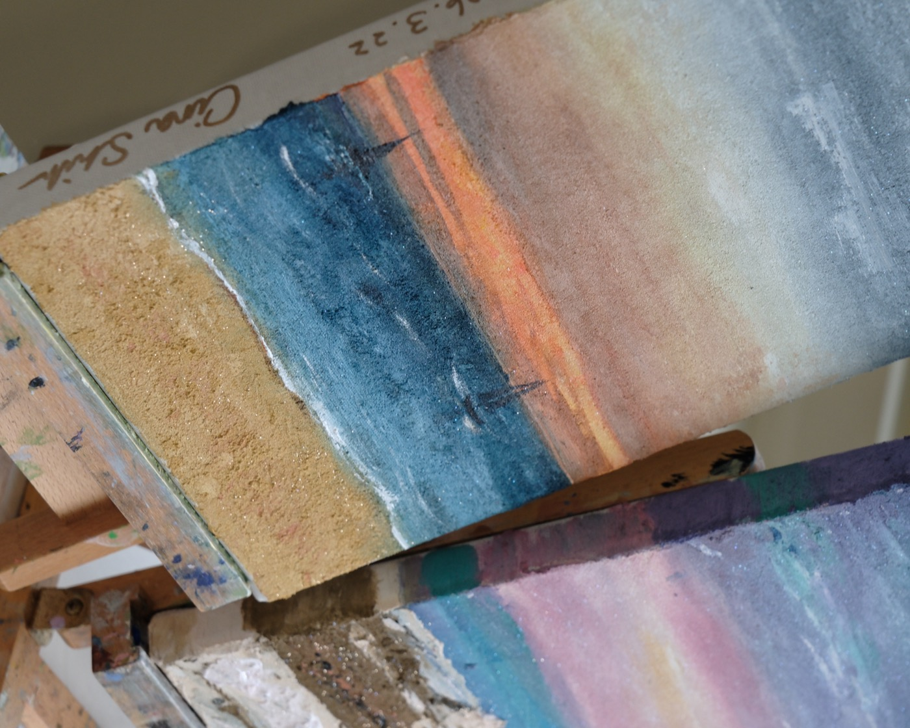
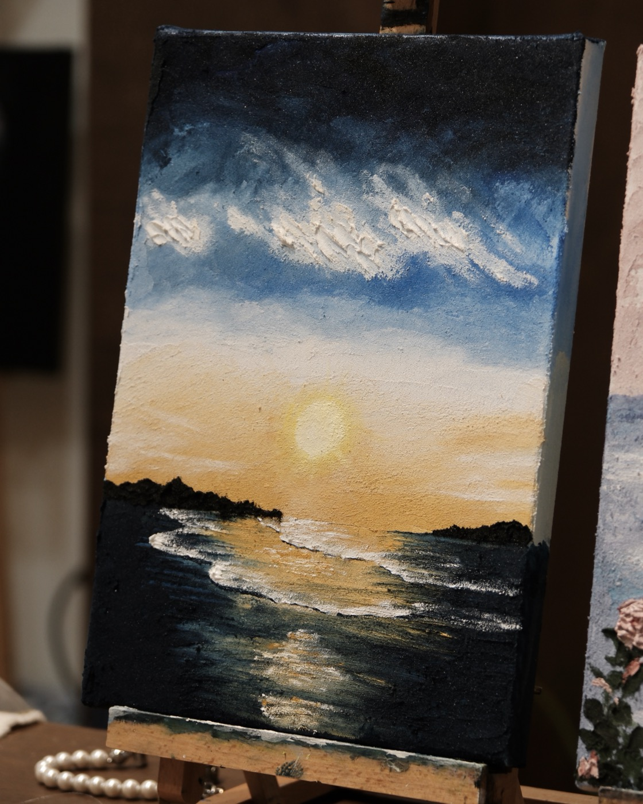
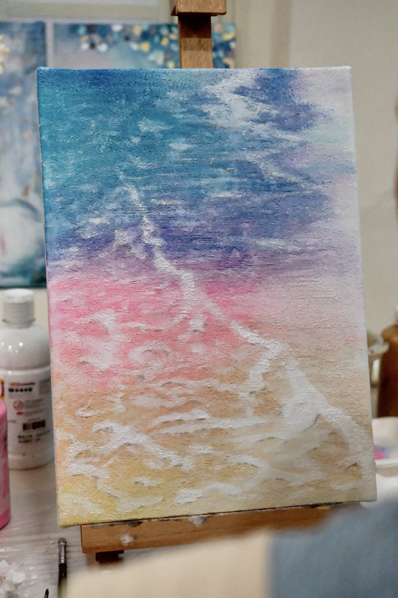
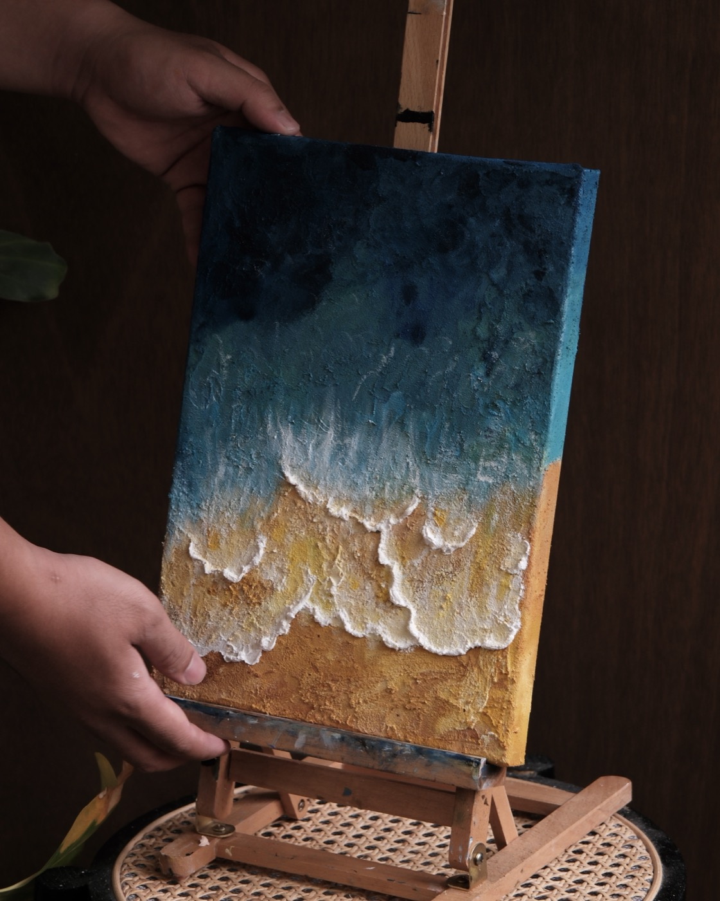
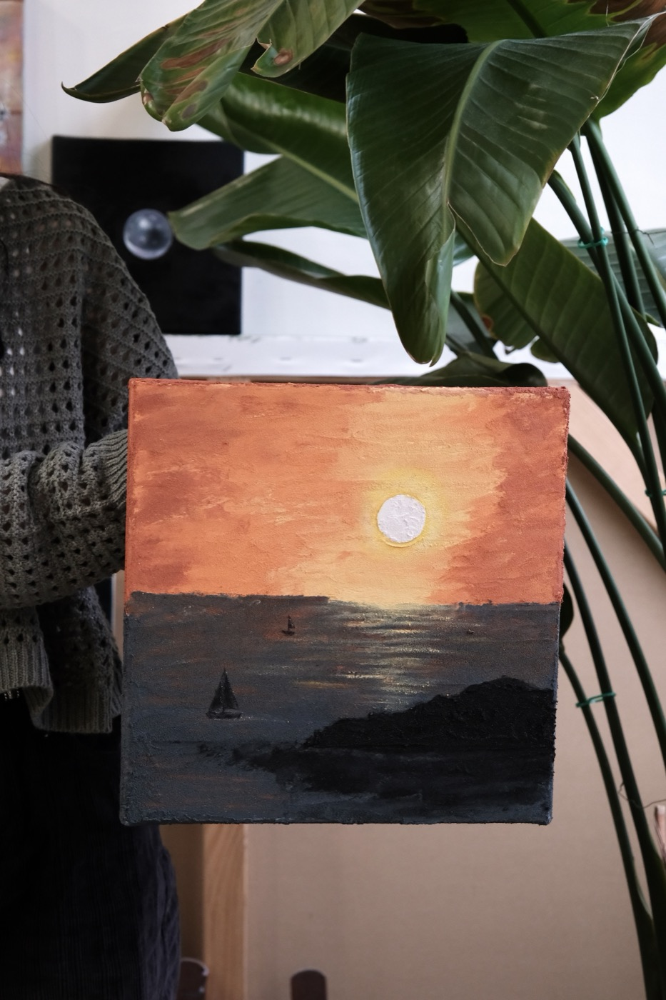
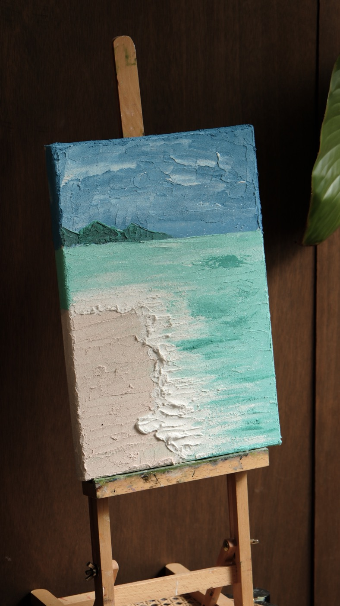
為什麼海特別適合肌理畫
比起油畫能用細膩筆觸描繪浪花的層次與光影變化，石英砂肌理畫走的是不同路線：它靠材料本身堆疊出的立體感，讓畫面直接從平面裡「浮」出來，比較接近淺浮雕，而不是單純的平面繪畫，這是油畫比較難取代的質地與觸感。
無論是想挑戰第一幅立體畫作的新手，或是想找一個跟平常水彩、壓克力顏料完全不同的創作方式，海洋主題的石英砂肌理畫都會是很好的起點。
沙與顏料比例，怎麼堆疊出浪花的立體感
石英砂跟壓克力顏料依比例混合成膏狀，比例會決定最後的顆粒感跟立體厚度，砂子加得多，沙灘的粗糙顆粒感會更明顯；顏料比例高一點，則比較好堆出浪花翻湧的細膩層次。正式下筆前通常會先試塗一小塊，確認濃淡跟顆粒感是不是自己想要的。
海浪的立體感是靠一層一層堆疊出來的：先做出海面的底層厚度，再局部加高浪頭、拉出浪花飛濺的角度，讓畫面在不同角度的光線下都能看到凹凸的層次。
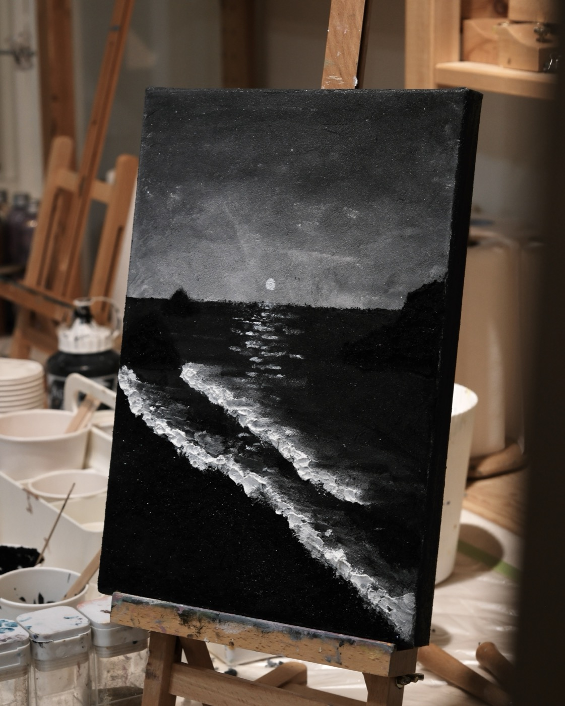
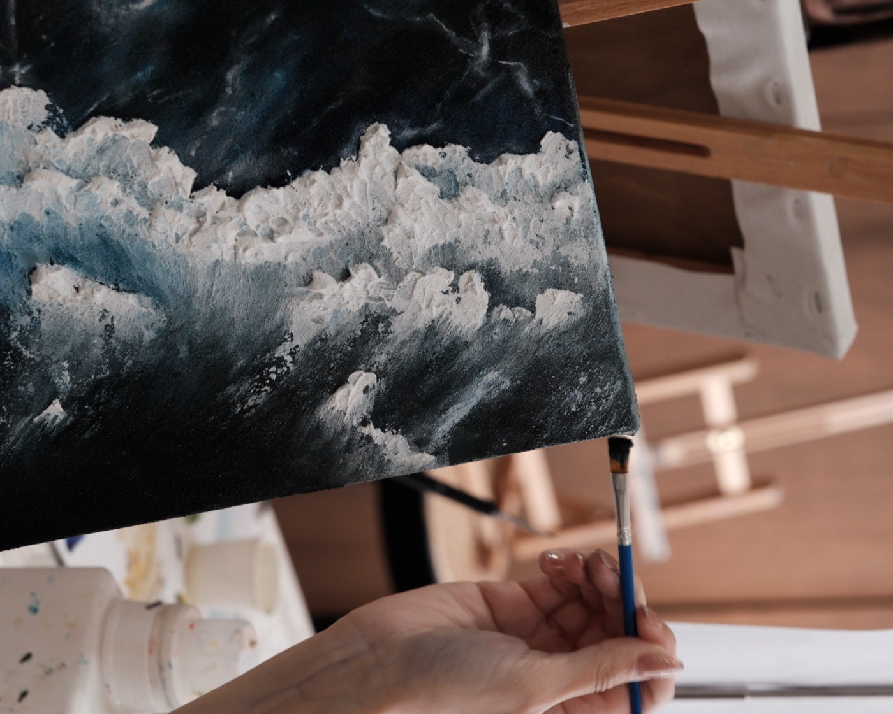
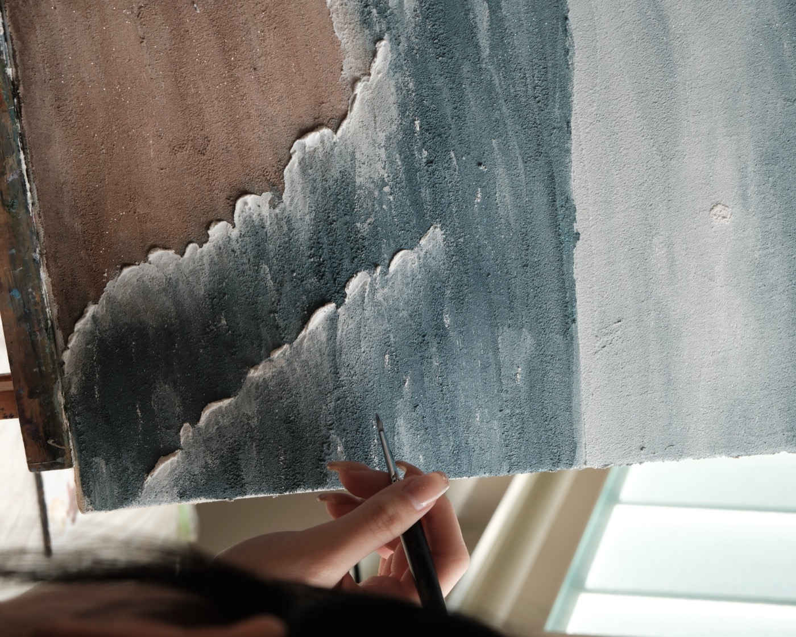
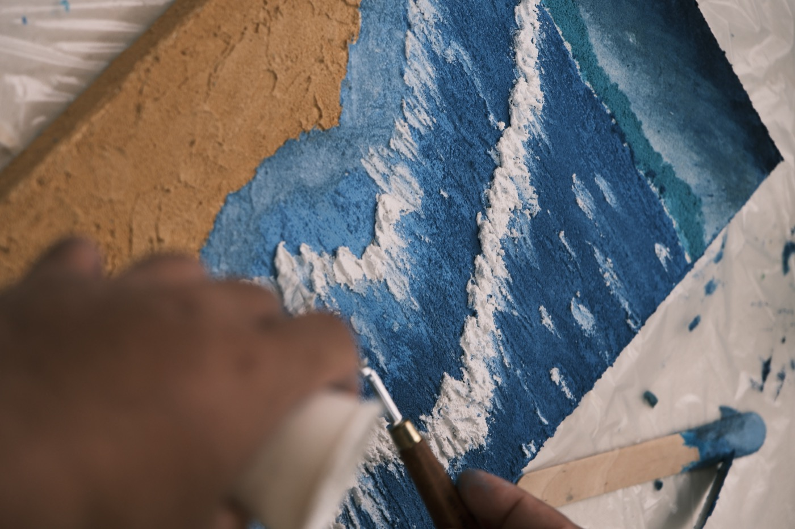
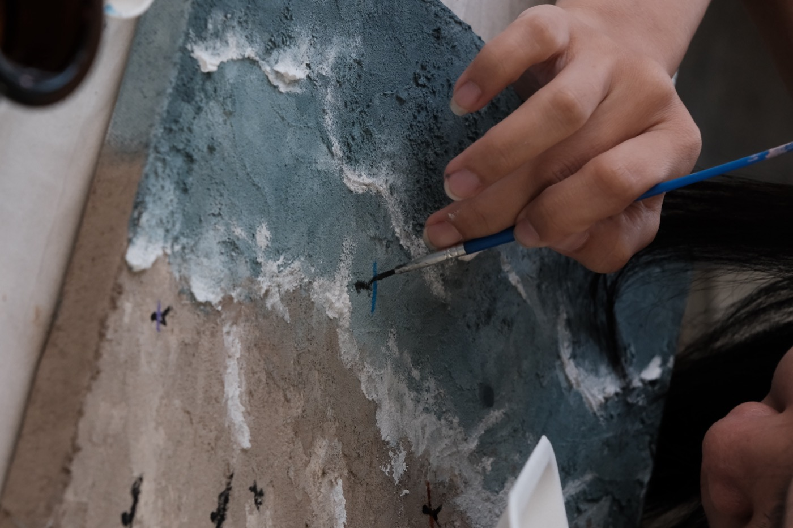
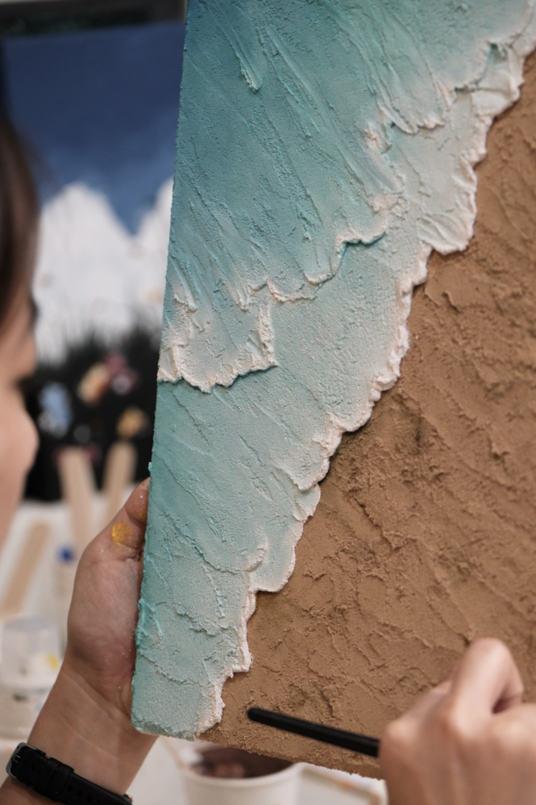
最常用的工具：刮刀
刮刀是塑形石英砂肌理畫最主要的工具，刮出來的紋理帶有明顯方向性，很適合表現浪花拍打時那種一層一層往前推進的稜角感。大面積的海面打底，也可以先用刮板推平做出基礎厚度，再用刮刀局部堆出浪頭的立體起伏。
如果畫面裡除了海還想加一些點景元素，像是飛鳥、船隻剪影，會建議先用刮刀完成海面的肌理，再用比較細的筆觸疊加這些小物件的細節。
適合的海景主題
寫實的海浪特寫、有沙灘跟浪花交界的岸邊、夕陽或夜色下的海景，都是同學常帶來的圖片類型，色塊清楚、明暗對比明顯的海景，做出來的立體效果會特別明顯。
如果不確定自己想畫的海景圖片適不適合，都可以先私訊傳圖片給我們，會協助評估圖片的難易度跟大概需要的完成時間。